Each block is the cover headline at real size. Compare the letterforms against
the wordmark above: look at the A, the E and the
flare where a stroke meets its terminal. Pick one, then tell me the name — or set
it yourself in src/app/layout.tsx (the <link> and
--font-wordmark).